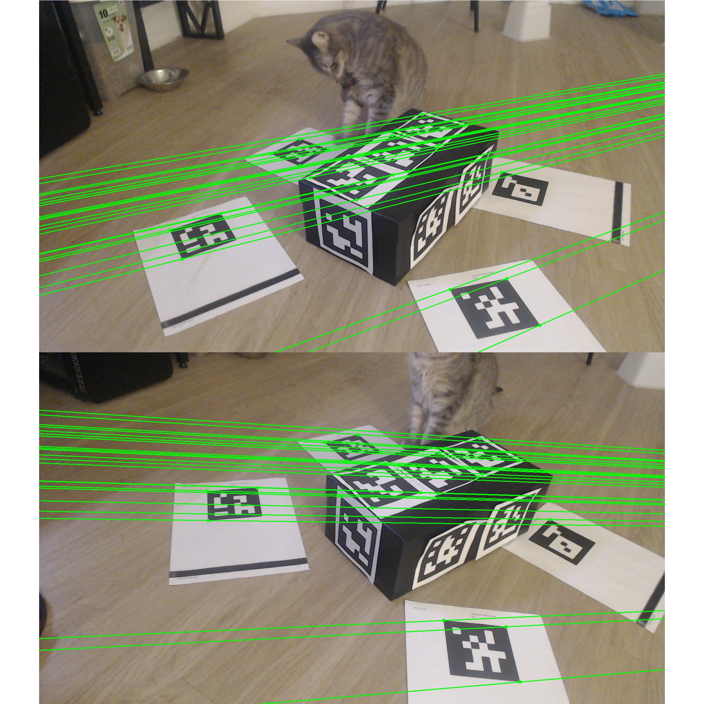
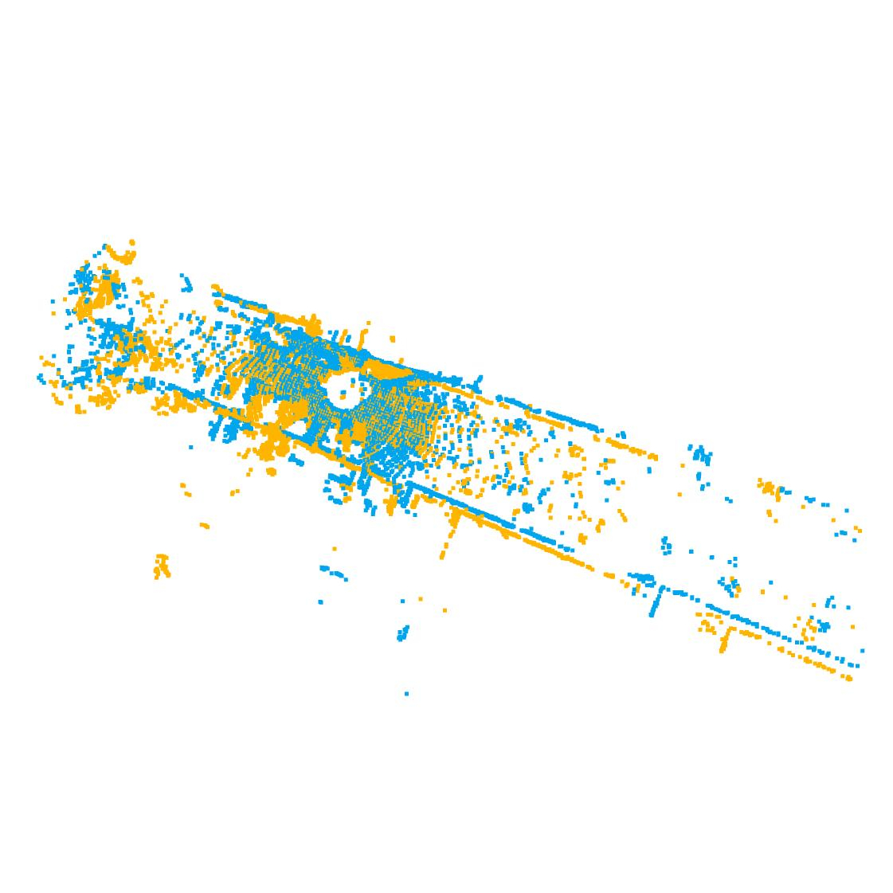
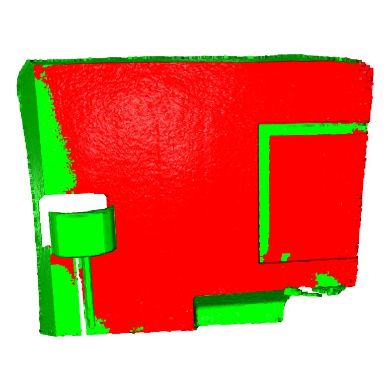

|
Shantanu Nitin Ghodgaonkar
I’m a roboticist passionate about exploring the fascinating intersection
of optimal control, reinforcement learning, computer vision, and legged robots. As a Master’s
student in Mechatronics, Robotics, and Automation Engineering at NYU, I love diving into
complex challenges. Whether it’s designing algorithms for multi-DOF robots, developing
vision-based model predictive control systems, or optimizing robot trajectories. With hands-on
experience in
tools like ROS, PyTorch, and OpenCV, I’m driven by the opportunity to bridge theory and
real-world
applications, pushing the boundaries of what autonomous systems can achieve. |

|
ProjectsMy projects cover topics like Model Predictive Control, Proximal Policy Optimization, Advanced Mechatronics, Internet Of Things, Computer Vision and Embedded Systems. |

|
Hexapod Robot: Scalable Trajectory Optimization and Motion Planning
Master’s Project, Fall 2024 - Present GitHub Repository This project involves developing scalable trajectory optimization and motion planning algorithms for a 7-DOF hexapod robot, enhancing gait stability and interaction with complex environments. |

|
Quadrotor Navigation with Reinforcement Learning
Course Project, Fall 2024 GitHub Repository This project aims to control a 2D quadrotor to reach a target while avoiding obstacles using reinforcement learning. A custom environment is created with the stable_baselines3 library, and an RL agent is trained using the Proximal Policy Optimization (PPO) algorithm to navigate efficiently and safely in a simulated environment. |

|
Q-Learning with Neural Networks for
Inverted Pendulum
Course Project, Fall 2024 GitHub Repository This project implements Q-learning using a neural network to solve the inverted pendulum problem. The objective is to train a policy that minimizes a defined cost function using PyTorch, with Q-values approximated by a neural network. The project includes the algorithm implementation, analysis of performance through cost and value function plots, and a demonstration video of the pendulum's behavior. |

|
Grid-World: Value Iteration and
Policy Iteration for Optimal Control
Course Project, Fall 2024 GitHub Repository This project explores solving a Grid-World problem using Value Iteration and Policy Iteration algorithms to compute the Optimal Policy and Value Function. The project compares the computational complexity and convergence behavior of the two methods, providing insights into their application in real-world Optimal Control problems. |

|
Skiptrace: Visual Place Recognition for
Surveillance
Course Project, Fall 2024 GitHub Repository This project implements a Visual Place Recognition system to match query images with a surveillance photo database using feature-based methods. The approach leverages SIFT descriptors, VLAD encoding, and k-means clustering to efficiently search and identify target locations from a large dataset. The implementation provides a structured pipeline for feature extraction, descriptor management, query processing, and visualization of retrieved images. |
|
|
Object Tracking: Sparse and Dense
Optical Flow
Course Project, Fall 2024 GitHub Repository This project involves implementing Object Tracking across video sequences using Optical Flow algorithms. Two methods, the Lucas-Kanade Sparse Optical Flow and Farneback Dense Optical Flow, are explored. The project demonstrates tracking entities persistently, visualizing motion fields, and comparing the efficiency and accuracy of both methods. Detailed step-by-step explanations and results with bounding box tracking are provided. |
|

|
F-Matrix and Relative Pose Estimation for Stereo Vision
Course Project, 2024 GitHub Repository This project computes the Fundamental Matrix (F-Matrix) and estimates the relative pose (R, t) between two stereo images. Using Aruco markers for robust point correspondences, the method applies RANSAC to filter outliers and accurately estimate the F-Matrix. The computed epipolar constraints are visualized to validate stereo geometry. The project further derives the Essential Matrix and decomposes it to recover the rotation and translation between the camera views. Visual results include epipolar line overlays on images, providing insights into the quality of estimated parameters. |
|
|
Trajectory Optimization and Model Predictive
Control for 2D Quadrotor
Course Project, Fall 2024 GitHub Repository This project focuses on developing a control system for a 2D quadrotor to perform a looping maneuver using optimization-based techniques. It includes trajectory optimization via Sequential Quadratic Programming (SQP) and extends to Model Predictive Control (MPC) for real-time adaptability and robustness in simulated environments. |
|

|
ICP-Based 3D Point Cloud Alignment Using Open3D
Course Project, Fall 2024 GitHub Repository This project implements the Iterative Closest Point (ICP) algorithm to align 3D point clouds, a crucial step in point cloud registration. It aligns two datasets by iteratively refining transformation estimates based on correspondences. The project includes two parts: one focusing on Open3D's demo point clouds and another applying ICP to KITTI self-driving dataset. The methodology involves correspondence matching, centroid alignment, rotation estimation using Singular Value Decomposition (SVD), and error convergence analysis. The results compare the accuracy of alignment between different datasets, highlighting ICP’s strengths and limitations. |
|

|
RANSAC-Based 3D Plane Fitting for Point Cloud Data
Course Project, Fall 2024 GitHub Repository This project implements RANSAC (Random Sample Consensus) for fitting a plane to 3D point cloud data. The algorithm robustly estimates plane parameters while handling outliers, making it a valuable tool in computer vision and robotics. The implementation follows an iterative approach with inlier classification and adaptive sampling to optimize computation. Using Open3D, the results visualize fitted planes where inliers are marked in red and outliers in green, effectively identifying dominant planar structures in 3D space. |
|
|
Implementation of SQP for Nonlinear Optimal
Control
Course Project, Fall 2024 GitHub Repository This project demonstrates the implementation of a Sequential Quadratic Programming (SQP) solver to solve a nonlinear optimal control problem. The problem focuses on controlling the dynamics of a pendulum to achieve a target configuration with minimal energy and precise control, using discretized dynamics and optimization techniques. |

|
Tag-based Augmented Reality: AR Cube
Projection on ArUco Markers
Course Project, Fall 2024 GitHub Repository This project demonstrates the implementation of tag-based augmented reality using ArUco markers. The program detects tags, estimates their pose, and overlays 3D objects such as a cube on the detected tags. It leverages OpenCV for marker detection, pose estimation, and visualization, showcasing augmented reality results from multiple perspectives. The implementation involves intrinsic camera calibration, marker size definitions, and detailed pose transformations for accurate AR projections. |

|
Maze Solving Robot
Course Project, Spring 2024 GitHub Repository This project showcases a maze-solving robot developed using Raspberry Pi 4B and Arduino Uno microcontrollers. By leveraging OpenCV for image processing, the robot identifies the ball's position and maze walls, while the breadth-first search (BFS) algorithm calculates the optimal path to the maze's exit. Servo motors controlled by the Arduino execute the navigation commands, enabling the robot to manipulate the ball’s movement effectively. The system operates in real-time, dynamically recalculating the ball’s path as it navigates through the maze. |

|
Vision and IMU Fusion with Unscented Kalman Filter
(UKF)
Course Project, Spring 2024 GitHub Repository This project explores the use of an Unscented Kalman Filter (UKF) for sensor fusion, integrating data from an Inertial Measurement Unit (IMU) and a vision-based system for enhanced robot state estimation. The UKF is selected for its ability to handle nonlinearities, making it more accurate than traditional Kalman Filters. Two scenarios are evaluated: using visual pose estimation for position and orientation measurements, and employing optical flow-derived velocity measurements. Performance is analyzed by comparing the estimated trajectories with ground-truth sensor data, demonstrating the effectiveness of UKF in handling nonlinear system models and limited measurements. |

|
Automatic Package Separator
Course Project, Spring 2024 GitHub Repository This project introduces an Automatic Package Separator system using Arduino technology to enhance the efficiency of package handling and segregation. The system employs 1D/2D barcode scanning for address detection, servo motors for package redirection, and an LCD module for real-time feedback. Designed for logistics and supply chain management, this innovative solution optimizes workflows and improves package processing accuracy. |

|
Robotic Kinematics and Visualization
Course Project, Fall 2023 GitHub Repository This project focuses on implementing robotic forward and inverse kinematics and visualizing the results through a "connect-the-dots" stick-figure representation of a robot. The platform emphasizes accurate computation of joint positions and end-effector configurations for complex robotic systems, as well as error handling when desired configurations are unreachable. The logic includes detailed functionality for forward kinematics, inverse kinematics, and visualization. |

|
Wearable Physiological Monitoring System Using
ClusterDuck Protocol
Bachelor's Project, 2017 GitHub Repository This project focuses on the development of a Wearable Physiological Monitoring System that leverages the ClusterDuck Protocol (CDP) to enable reliable communication between wearable health monitoring devices and a base station. Designed for real-time monitoring, the system measures key physiological parameters, such as heart rate and body temperature, and transmits the data wirelessly using LoRa technology. The wearable device is built with an ESP32 microcontroller, ensuring low power consumption and seamless communication, even in challenging conditions or emergencies. |
|
Feel free to steal this website's source code. Do not scrape the HTML from this page itself, as it includes analytics tags that you do not want on your own website — use the github code instead. Also, consider using Leonid Keselman's Jekyll fork of this page. |